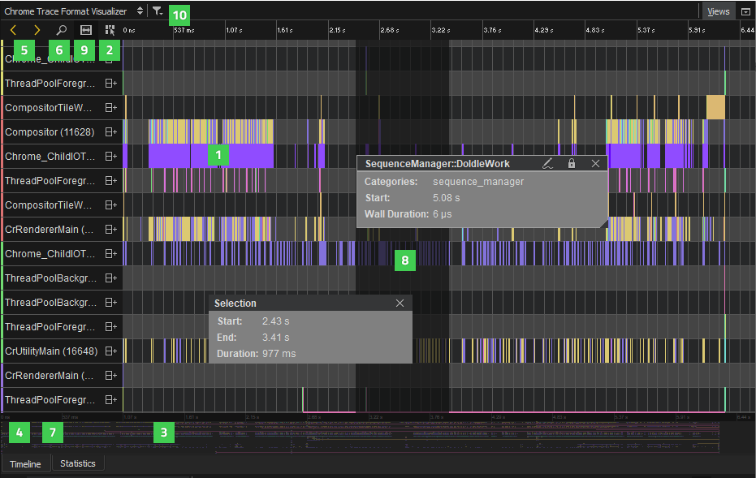
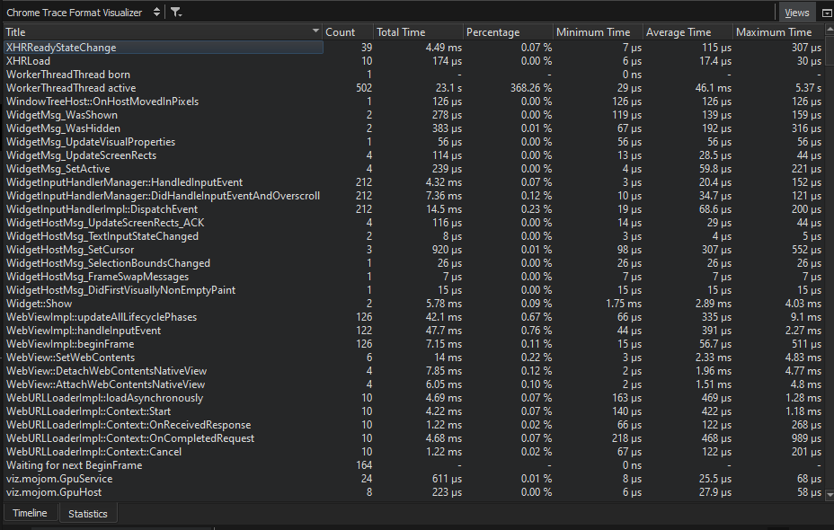

Visualizing Chrome Trace Events
You can use full stack tracing to trace from the top level QML or JavaScript down to the C++ and all the way to the kernel space. This enables you to measure the performance of an application and to check whether it is CPU or I/O bound or influenced by other applications running on the same system. Tracing gives insight into what a system is doing and why an application is performing in a particular way. It indicates how the hardware is utilized and what the kernel and application are doing.
Tracing information can tell you more about the data that QML Profiler collects. For example, you can check why a trivial binding evaluation is taking so long. This might be caused by C++ being executed or the disk I/O being slow.
Several tracing tools (such as chrome://about) can generate information about Chrome trace events in Chrome Trace Format (CTF). You can open CTF files in Qt Creator for viewing. This is especially useful when viewing trace files larger than 100 MB, which are difficult to view with the built-in trace-viewer (chrome://tracing) due to its high memory usage.
The visualizer supports all event types used in data that the LTTng tracing framework generates, converted to CTF. However, some of the more advanced event types used, for example, in Android system traces, are not supported. The visualizer silently ignores unsupported event types.
The visualizer supports the following event types:
- Begin, end, duration, and instant events
- Counter events (graphs)
- Metadata events (process and thread name)
Opening JSON Files
To open JSON files for viewing, select Analyze > Chrome Trace Format Viewer > Load JSON File.
Visualizing Events
The Timeline view displays a graphical representation of trace events and a condensed view of all recorded events.

Each category in the timeline describes a thread in the application. Move the cursor on an event (1) on a row to view its duration and event category. To display the information only when an event is selected, disable the View Event Information on Mouseover button (2).
The outline (3) summarizes the period for which data was collected. Drag the zoom range (4) or click the outline to move on the outline. To move between events, select the Jump to Previous Event and Jump to Next Event buttons (5).
Select the Show Zoom Slider button (6) to open a slider that you can use to set the zoom level. You can also drag the zoom handles (7). To reset the default zoom level, right-click the timeline to open the context menu, and select Reset Zoom.
Select the  (Restrict to Threads) button (10) to select the threads to show.
(Restrict to Threads) button (10) to select the threads to show.
Selecting Event Ranges
You can select an event range (8) to view the time it represents or to zoom into a specific region of the trace. Select the Select Range button (9) to activate the selection tool. Then click in the timeline to specify the beginning of the event range. Drag the selection handle to define the end of the range.
You can use event ranges also to measure delays between two subsequent events. Place a range between the end of the first event and the beginning of the second event. The Duration field displays the delay between the events in milliseconds.
To zoom into an event range, double-click it.
To remove an event range, close the Selection dialog.
Viewing Statistics

The Statistics view displays the number of samples each function in the timeline was contained in, in total and when on the top of the stack (called self). This allows you to examine which functions you need to optimize. A high number of occurrences might indicate that a function is triggered unnecessarily or takes very long to execute.
Collecting LTTng Data
LTTng is a tracing toolkit for Linux that you can apply on embedded Linux systems to find out how to optimize the startup time of an application.
Since Qt 5.13, Qt has a set of kernel trace points and a tracing subsystem for custom user space trace points.
Configuring the Kernel
To use LTTng, you have to set the following configuration options for the kernel before building it:
CONFIG_HIGH_RES_TIMERSCONFIG_KALLSYMSCONFIG_MODULESCONFIG_TRACEPOINTS
We recommend that you set the following additional options:
CONFIG_EVENT_TRACINGCONFIG_HAVE_SYSCALL_TRACEPOINTSCONFIG_KALLSYMS_ALL
In Yocto, you can activate the above options in Menu > Config > Kernel Hacking > Tracers.
Installing LTTng
After you build the kernel and deploy it on your device, you'll need to install the following LTTng packages on your device:
lttng-toolsto control the tracing sessionlttng-modulesfor kernel trace pointslttng-ustfor user space trace points
In Yocto, you just need to enable EXTRA_IMAGE_FEATURES += "tools profile".
Building Qt with Tracepoints
Trace points are continuously being added to Qt versions. To use them, you need to build Qt yourself with the configure -trace lttng option.
Recording Events
To create a session, you call the lttng create command. Then you call lttng enable-channel kernel -k to enable the kernel channel. Within the kernel channel, you specify the appropriate trace points as kernel_events and call lttng enable-event to enable them. Finally, you call lttng start to start tracing.
You call lttng stop to stop tracing. You can use sleep to set the length of the session. After stopping, you can call lttng destroy to destroy the session.
You can write and run scripts that contain the above commands to start and stop full-stack tracing. You can use systemd to execute the scripts.
Enabling Trace Points
Data is recorded according to the trace points that you enable in the LTTng session. Usually, it is useful to enable scheduler switch, syscall, and Qt trace points.
Scheduler Switch Trace Points
Scheduler switch trace points are reached when an application is switched out due to predemption, for example, when another process gets the chance to run on the CPU core. Enable scheduler switch trace points to record the thread that is currently running and the process it belongs to, as well as the time when the process started and stopped.
Syscall Trace Points
Syscall trace points help you to understand why a scheduler switch happened. The following are examples of syscalls to trace:
openatandclosemap file descriptors to file namesmmapmaps page faults to filesreadandwriteare triggered by I/O operationsnanosleep,futex, andpollexplain scheduler switchesioctlcontrols the GPU and display
Converting LTTng Data to CTF
The ctf2ctf tool uses babeltrace to parse binary Common Trace Format (CTF) and converts it to Chrome Trace Format (CTF). It performs the following custom tasks to make the recording more human-readable:
- Map file descriptors to file names
- Map page faults to file names
- Annotate interrupts and block devices with names
- Convert UTF-16 QString data to UTF-8 strings
- Count memory page allocations
To generate JSON files that have the trace data in Chrome Trace Format, enter the following command on the command line:
ctf2ctf -o trace.json path/to/lttng trace/